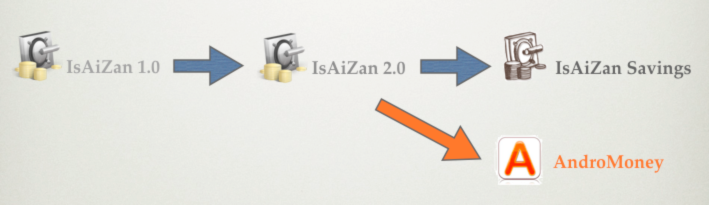

● IsAiZan 怎麼在 Google Play 搜尋不到了？！
IsAiZan 最初上架的時候是借用他人的帳號，但現在那個帳號因故無法使用了。
於是我們重新申請一個 Google Play 的帳號，掌控權回到自己手上，不會在出現之前莫名下架的情況！
● 為何要將 IsAiZan 更名為 IsAiZan Savings?
我們正在計畫許多重大更新，原本預計是全部完成後再以新的名稱發佈，但是突然發生了帳號的問題，就提早開始囉！
除次之外，也希望藉由這樣的方式區隔出新舊分支版本的差異

● IsAiZan 跟 AndroMoney 的關係？
AndroMoney 為原本 IsAiZan 團隊成員另起爐灶之作，目前與 IsAiZan 並不相容
● IsAiZan 跟 AndroMoney 資料是否可以互相轉換？
不可
● 要如何將 IsAiZan 舊有資料轉移至 IsAiZan Savings?
1. 開啟原本的 IsAiZan -> Menu -> 匯入(出) -> 備份至SD卡
2. 安裝 IsAiZan Savings https://play.google.com/store/apps/details?id=tw.com.isaizan
3. 開啟 IsAiZan Savings -> Menu -> 匯入(出) -> 從SD卡還原
4. 無痛轉移成功！！
● 官方網站好像掛掉了？